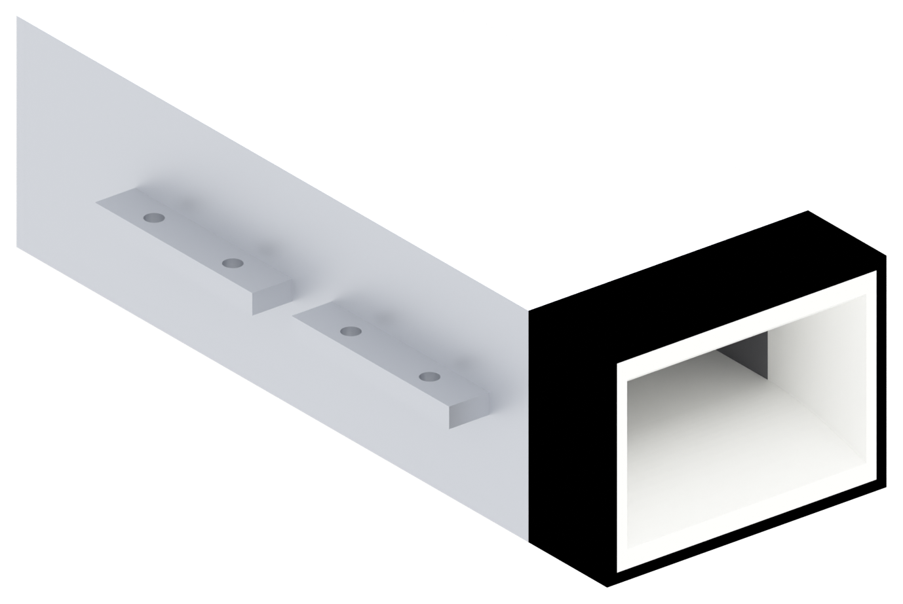
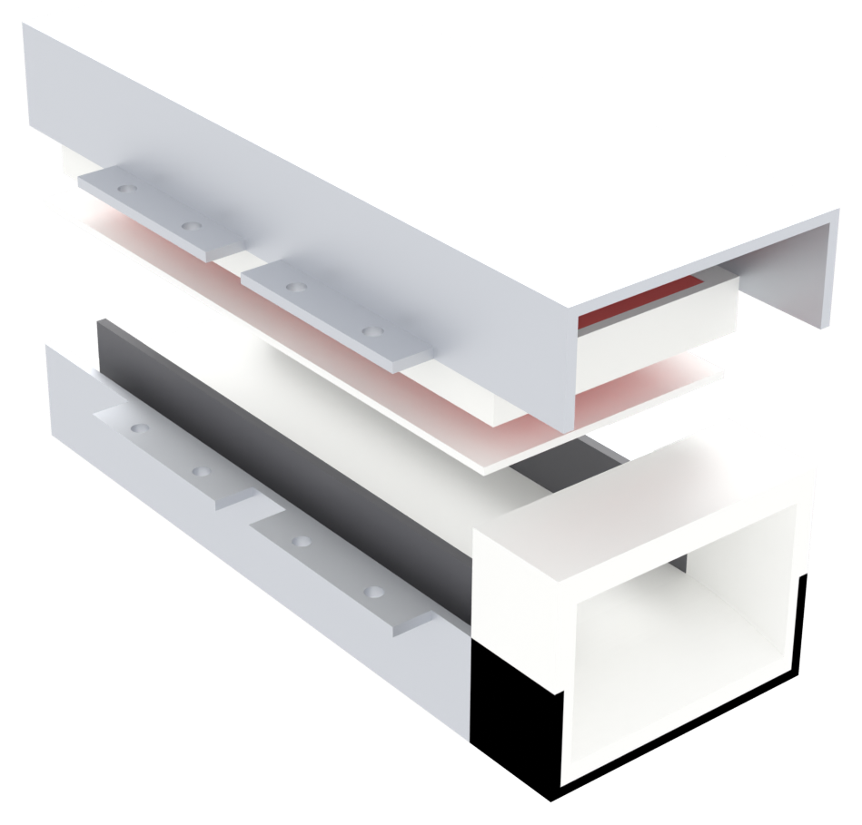
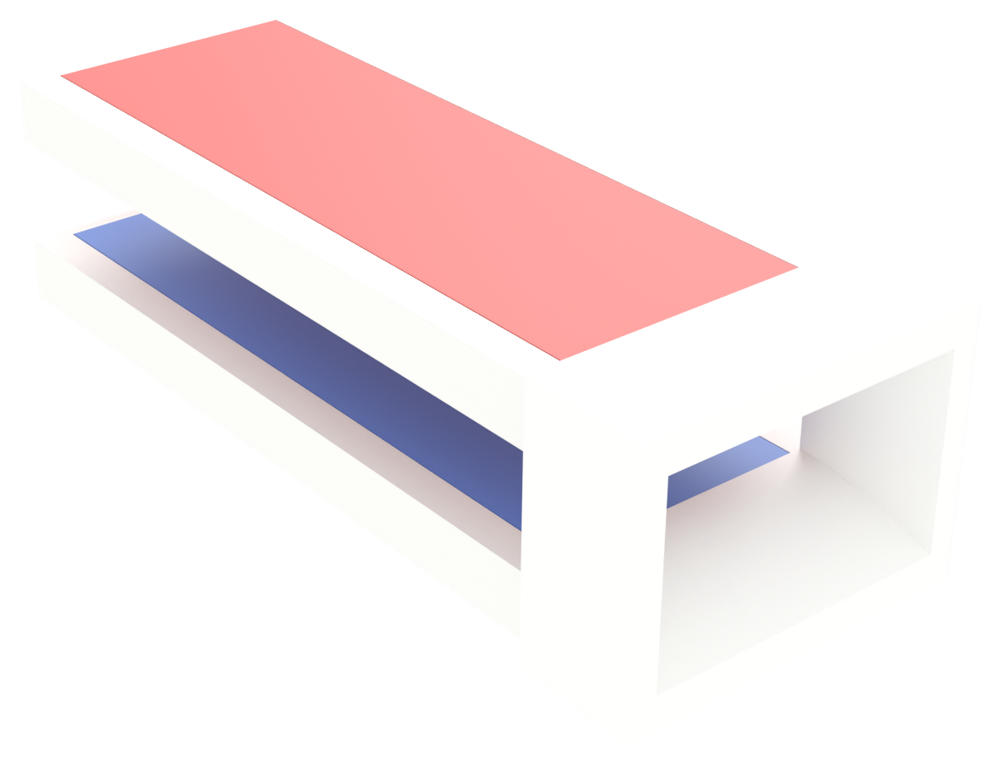
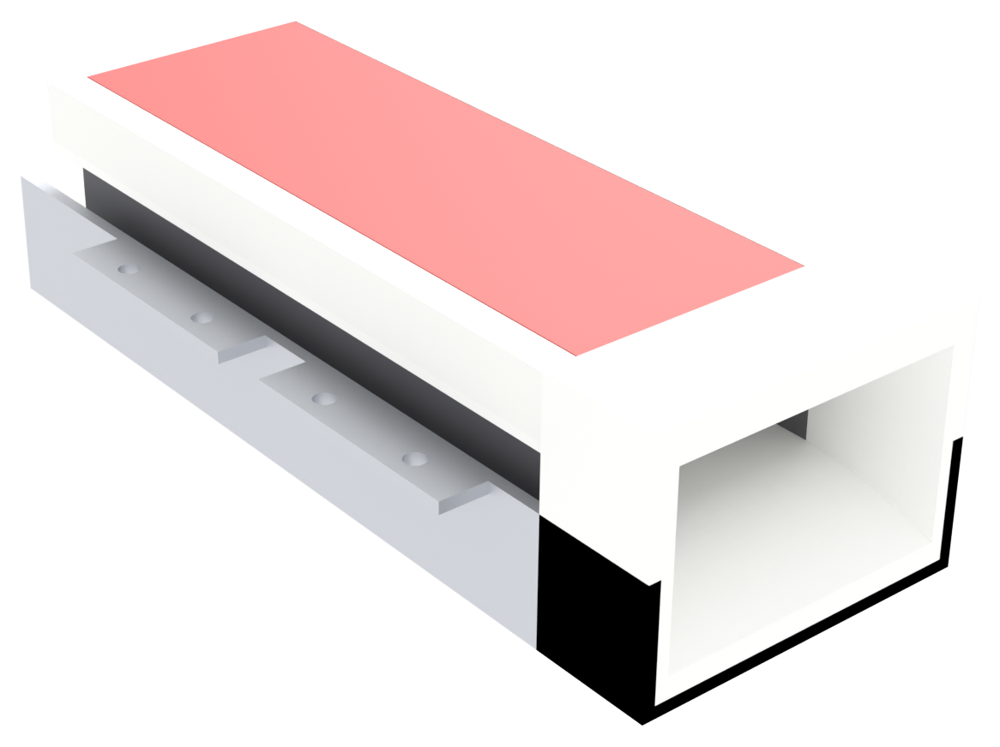
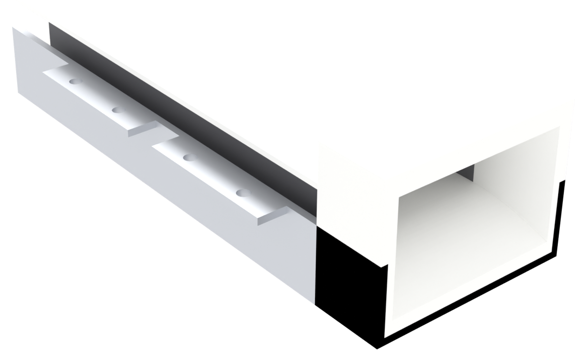
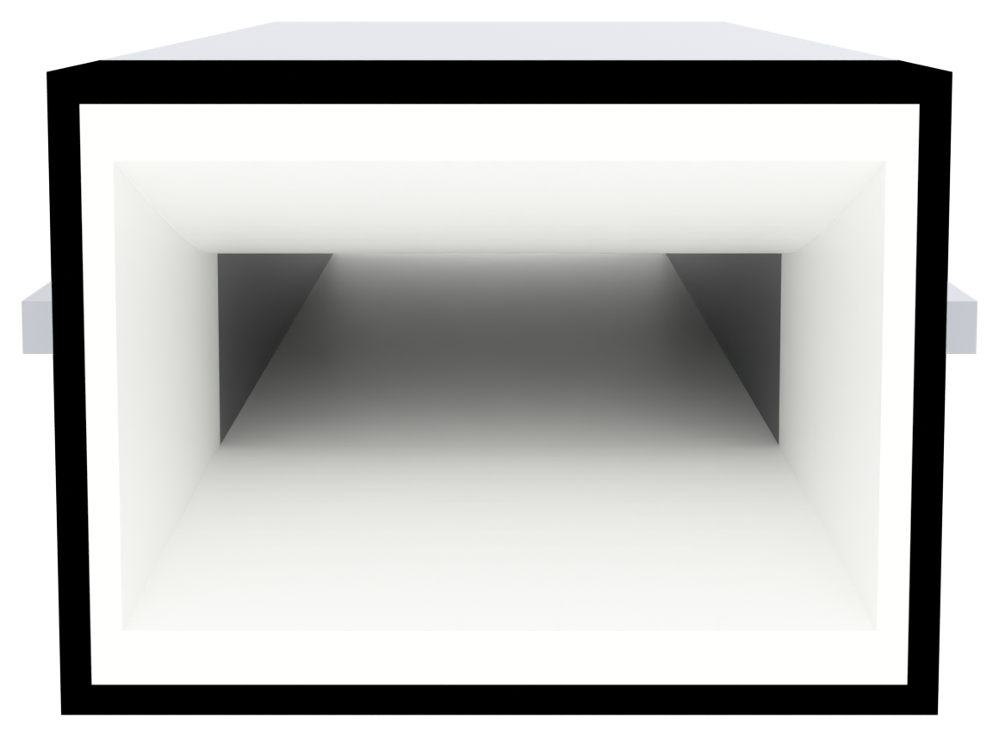

An MHD pump channel: brine (or seawater) runs through a 40 × 14 mm bore, a 483 mT field crosses it, current flows between two graphite plates on the side walls, and the resulting Lorentz force pushes the water out the straight end. A curved bellmouth at the inlet keeps the flow attached so the pump does not cavitate itself.

plastic/| File | Qty | Size (mm) | Notes |
|---|---|---|---|
bellmouth.stl | 1 | 20 × 56 × 41 | flare 48 × 30 → 40 × 14, printed with the mouth facing up |
tray.stl | 2 | 124 × 52 × 10 | magnet tray; one 40 mm pocket on each face |
liner_top.stl / liner_bottom.stl | 2 | 130 × 52 × 1.5 | identical — print the same file twice |
metal/| File | Qty | Blank (mm) | Notes |
|---|---|---|---|
clamshell-flat.dxf | 2 | 150 × 110.3 | 2.0 mm mild steel / SPCC, laser cut, then folded |
| Item | Qty | Notes |
|---|---|---|
| N52 magnet 20 × 10 × 5 | 96 | 24 per face: 6 along × 4 across × 2 deep |
| Graphite plate 120 × 14 × 2 | 2 | side-wall electrodes |
| M3 × 16 bolt + nut | 8 | through the lugs |
| Epoxy | — | liner to tray, magnets to tray |
| Feature | Value | Why it matters |
|---|---|---|
| Channel (bore) | 40 × 14 | sets current density and Dh = 20.7 |
| Driven length Le | 120 | 6 stations × 20; force ∝ L |
| Steel wall | 2.0 | flux return + structure |
| Liner | 1.5 | water barrier over the magnets |
| Magnetic gap | 17 | 2 × (1.5 liner + 2 × 5 tile) + 2 × 1 air |
| Bellmouth mouth | 48 × 30 | flare narrows to the bore over 20 mm |
| Outlet | straight | a diverging nozzle measurably costs speed — do not add one |
Laser-cut two blanks from clamshell-flat.dxf. Fold 90° along the dashed
bend lines — plate/wall at Y = ±28.0, wall/lug at Y = ±47.15.

Each tray takes 24 tiles: 6 along the length, 4 across the width, 2 deep. Tiles butt edge to edge — the 4 across fill the full 40 mm, which is the whole point: a gap leaves part of the channel un-driven.
Check polarity station by station with a compass before the epoxy sets. All six stations on one face must point the same way, and the opposite face the other way.

1.5 mm plate, epoxied to the magnet face. This is the water barrier — the steel and the magnets must never see brine. Keep the bond line thin; 0.5 mm of epoxy between magnets and water is 0.5 mm of extra magnetic gap.

Graphite plates 120 × 14 × 2 slide against the 40 mm side walls of the bore, flush with the liner. They are the anode and cathode; keep them clear of the bellmouth so the entry flow is not disturbed.
Wire all six stations in parallel. Compass-check the field direction against the current direction once — if they fight, the pump pushes backwards.

Drop the lower tray assembly into the bottom half, the upper one into the top half, then bring the halves together along the mid-plane. The lug faces are bare — no paint, no gasket between them — because they are the flux return path.
Fit 8 × M3 bolts and tighten in a cross pattern, a little at a time, so the halves seat flat instead of rocking.
The printed inlet bolts to the front of the steel tube. Its curved flare takes the 48 × 30 mouth down to the 40 × 14 bore over 20 mm — this is what keeps the entry flow attached.
Leave the outlet straight. A diverging nozzle was measured to drop boat speed from 0.3 to 0.2 m/s through recirculation.

| Joint | Clearance | Consequence if wrong |
|---|---|---|
| magnet in tray pocket | 0.2 per side | too tight cracks tiles on insertion |
| tray inside steel cavity | 0 (clamped) | slack tray rattles and wears the liner |
| liner to tray face | 0.5 bond line | thick epoxy = wider gap = weaker field |
| electrode to liner pocket | 0.1 per side | leaks past the electrode, current bypasses the water |
| M3 bolt in lug hole | Ø3.4 hole | standard M3 clearance |